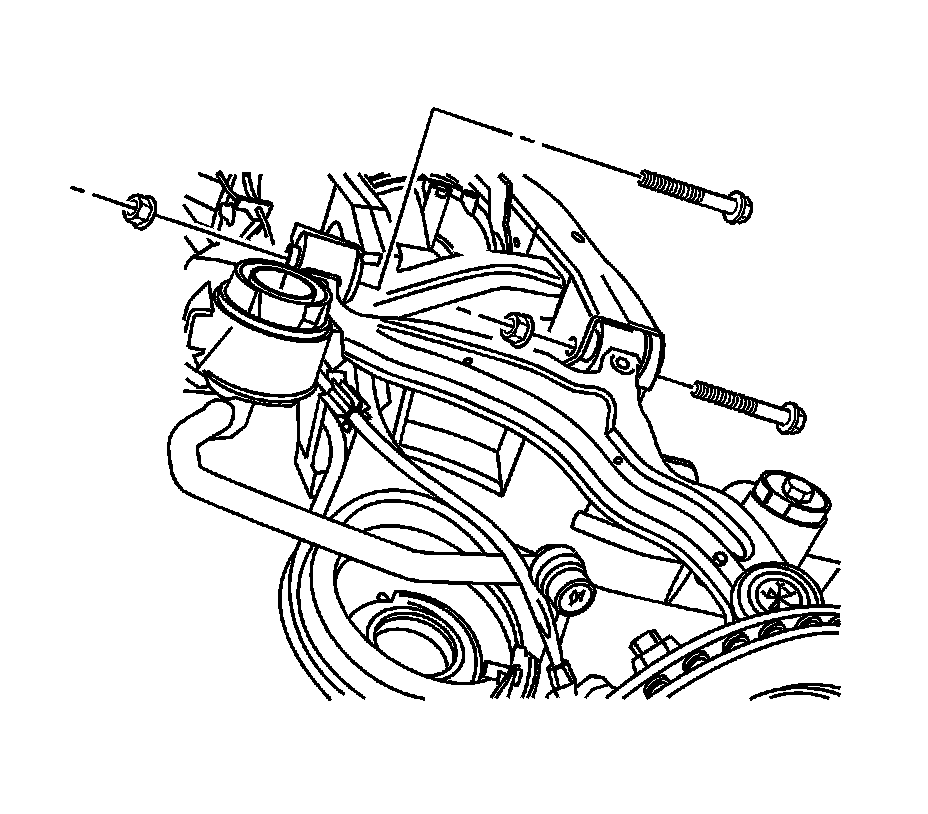

Upper Control Arm Replacement
Upper Control Arm Replacement
Tools Required
J 43631 Ball Joint Remover
Removal Procedure
Notice: The ball stud must not rotate during disassembly or reassembly. Hand tools must be used to keep the ball stud from rotating. If air tools are used and the stud is allowed to rotate, damage to the ball stud and/or stud mounting hole may occur.
1. Raise and support the vehicle. Refer to Lifting and Jacking the Vehicle (Service and Repair) .
2. Remove the tire and wheel. Refer to Tire and Wheel Removal and Installation (Service and Repair) .

3. Remove the upper control arm to knuckle retaining nut.

Notice: Do not free the ball stud by using a pickle fork or a wedge-type tool. Damage to the seal or bushing may result.
4. Using the J 43631 , disconnect the upper control arm from the knuckle.

5. Remove the upper control arm to frame mounting nuts and discard.
6. Remove the upper control arm to frame mounting bolts and discard.
7. Remove the upper control arm from the vehicle.
Installation Procedure
1. Install the upper control arm to the vehicle.
Important: Loosely install all fasteners before tightening.
2. Install the upper control arm to frame mounting bolts.
3. Install the upper control arm to frame mounting nuts.
4. Install the upper control arm to the knuckle.
Notice: Refer to Fastener Notice (Fastener Notice) .
5. Install the upper control arm to knuckle retaining nut.
* Tighten the upper control arm to knuckle nut to 20 N.m (15 lb ft) plus an additional 210 degrees.
* Tighten new upper control arm to frame bolts to 120 N.m (89 lb ft).
* Tighten new upper control arm to frame nuts to 120 N.m (89 lb ft).
6. Install the tire and wheel. Refer to Tire and Wheel Removal and Installation (Service and Repair) .
7. Lower the vehicle.